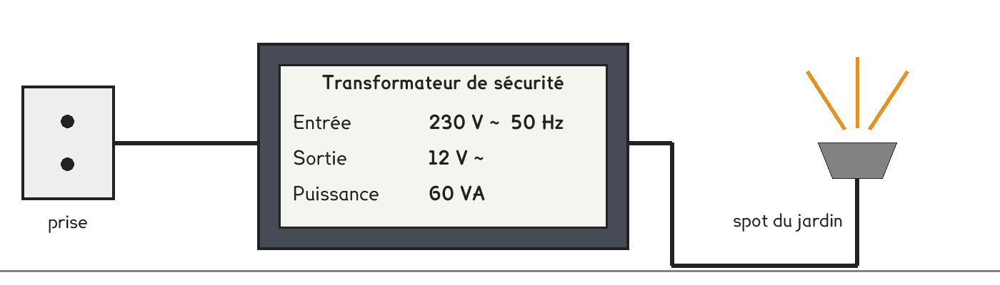
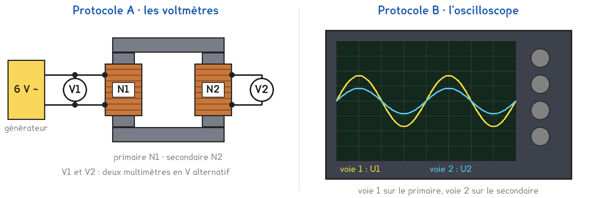

1re ou Tle Bac Pro · toutes spécialités · TP commun CT-09
De quoi dépend la tension que rend un transformateur ?
2 figures
Sujet. Les spots du jardin s’allument en 12 V, alors que la prise de la maison donne 230 V. Entre les deux, un boîtier fait le travail : c’est un transformateur. Voici sa plaque.

Problématique : de quoi dépend la tension que rend un transformateur ?
Au laboratoire, on construit un transformateur : deux bobines sur un même noyau de fer, sous 6 V seulement.
a) Relever sur la plaque les deux tensions. Entourer leur nature.
| L’entrée, ou primaire | La sortie, ou secondaire | |
|---|---|---|
| La tension (V) | …………… | …………… |
| Elle est | continue · alternative | continue · alternative |
Ce transformateur est, entourer : abaisseur · élévateur.
b) Calculer combien de fois le transformateur du jardin divise la tension.
230 ÷ ……… = ……… : la tension est divisée par environ ………
Deux protocoles répondent à la même question : une partie de la classe prend A, l’autre prend B, et on compare à la fin.
Protocole A · les voltmètres. Un multimètre en alternatif sur chaque bobine donne la valeur efficace de U1 et de U2, celle qu’on écrit sur les plaques.
Protocole B · l’oscilloscope. Les deux tensions s’affichent ensemble. On lit leur valeur maximale : nombre de divisions × sensibilité.

c) Compléter le tableau pour comparer les deux protocoles.
| Protocole A | Protocole B | |
|---|---|---|
| On lit la valeur de la tension | efficace · maximale | efficace · maximale |
| On voit la forme de la tension | oui · non | oui · non |
| Une limite | …………………………… | …………………………… |
Le choix se fait maintenant, avant de toucher au matériel.
d) Quel protocole prenez-vous ? Justifier en une phrase.
Le professeur peut vous imposer celui qui reste disponible.
Je prends le protocole ……… parce que ……………………………………………………………………
e) Hypothèse pour le montage 250 → 500 spires, sous 6 V. Entourer.
U2 sera plus petite que 6 V · égale à 6 V · plus grande que 6 V.
Valeur prévue : U2 ≈ ……… V
Avant de commencer
Primaire sur le générateur 6 V alternatif seulement, jamais sur une prise du secteur.
Générateur coupé avant de toucher une bobine ou le noyau, barre posée avant d’allumer.
Les trois montages du tableau, aucun autre : la sortie prévue reste sous 24 V.
Trois montages dans les deux protocoles, dans l’ordre du tableau g : 500 → 250 spires, 500 → 500, puis 250 → 500.
f) Schématiser votre montage avec les symboles normalisés :
générateur, transformateur, voltmètres ou voies de l’oscilloscope.
Le schéma se dessine sur la feuille du TP.
g) Relever les tensions, puis calculer les deux rapports au centième.
| Montage, spires N1 → N2 | 500 → 250 | 500 → 500 | 250 → 500 |
|---|---|---|---|
| Tension au primaire, U1 (V) | |||
| Tension au secondaire, U2 (V) | |||
| U2 ÷ U1 | |||
| N2 ÷ N1 |
h) Comparer les deux dernières lignes du tableau. Que remarquez-vous ?
Votre hypothèse de la question e est-elle confirmée ?
i) Comparer avec un groupe de l’autre protocole : tensions, puis rapports.
Pourquoi ses tensions ne sont-elles pas les vôtres ?
j) Au jardin, y a-t-il plus de spires au primaire ou au secondaire ?
Combien de fois plus, d’après la question b ?
k) Répondre à la problématique en deux phrases.
Ce que ce TP a établi, et qui vaut pour tout transformateur :
À RETENIR
Un transformateur change la valeur d’une tension alternative. Deux bobines entourent un même noyau de fer : le primaire reçoit la tension U1, le secondaire rend la tension U2.
Le rapport des tensions est à peu près celui des nombres de spires : U2 ÷ U1 ≈ N2 ÷ N1. Plus de spires au secondaire : il élève la tension. Moins : il l’abaisse.
Pour transporter la même puissance, on élève la tension 20 fois : l’intensité dans les câbles devient 20 fois plus petite. Les pertes par effet Joule, P = R × I², sont alors divisées par, entourer :
20 · 40 · 400
Pourquoi abaisse-t-on ensuite la tension avant qu’elle entre dans les maisons ?
TP commun de physique-chimie, toutes spécialités. Le travail se fait sur la feuille du TP : cette page en est la version à l'écran, sans les lignes à remplir. Rien n'est enregistré.